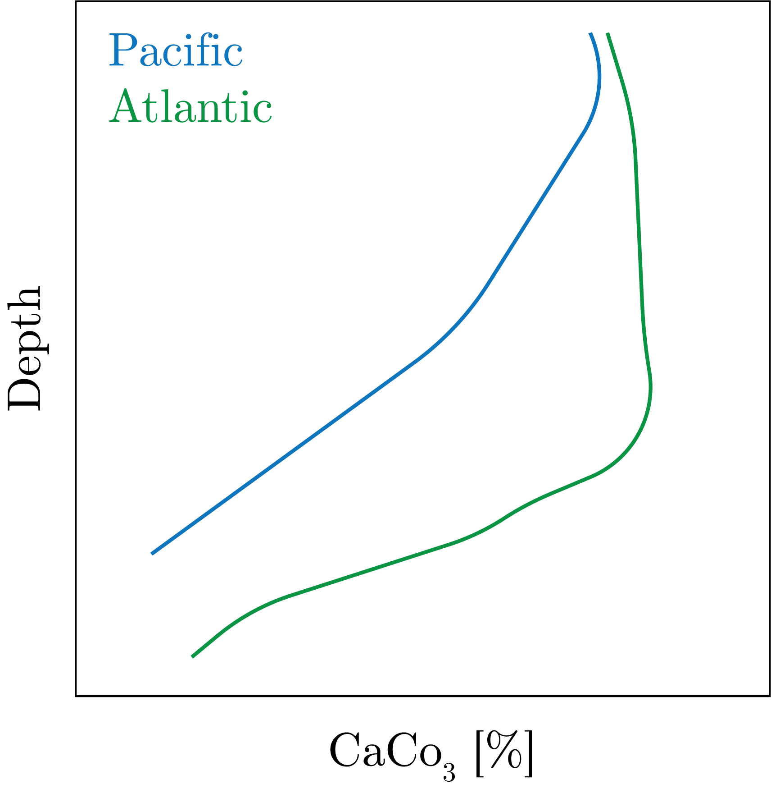
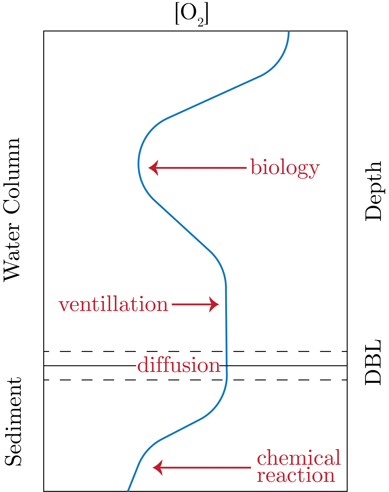
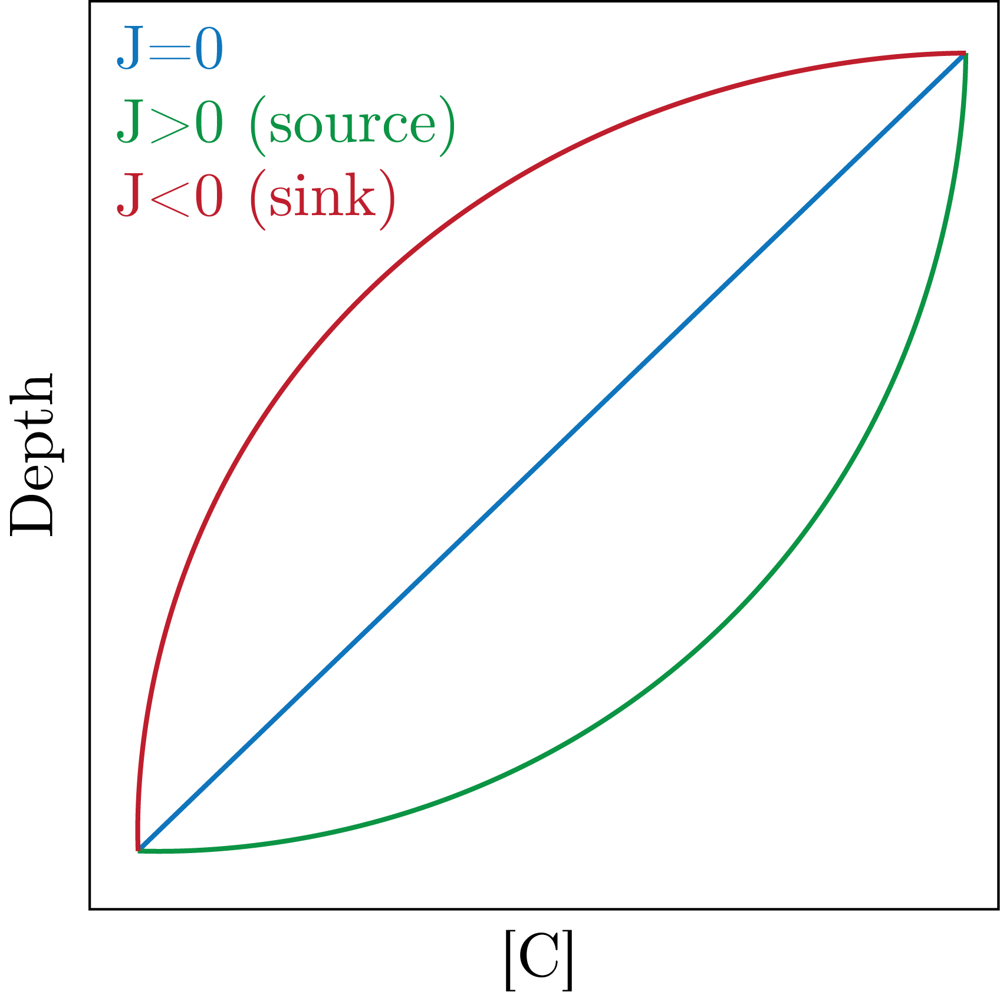

Specific mineral phases include, with max relative abundance:
Montmorillonite: 70%
Illite: 50%
Kaolinite: 50%
Chlorite: 30%
These are end of the line (generally) chemical species that are stable in seawater.
Distributions of Phases
Additionally, there are Manganese nodules at the bottom of the ocean (also called polymetallic nodules, given that they include numerous metals, including rare earth metals and Ni, Nd, etc.)
In the Pacific Ocean we have a particularly abundant distribution.
They take million of years to form, but it is unknown how they are formed but biology might play a role.
We can also look at the distribution of siliceous sediments, which looks very similar to surface ocean P.
This is because diatoms take up silica in their shells, die, and then sink in these regions, depositing silica in the sediments.
What is interesting is that the ocean is undersaturated Si everywhere and yet even with this dissolution there is silica burial.
Next, we can look at $\text{CaCO}_3$ distributions, which really gives maps of topography more so than chemistry.
This is because calcium carbonate becomes more soluble with pressure, which then causes it to dissolve away.
We can also compare the Pacific to the Atlantic waters.
As the Pacific is older water (end of the global conveyor belt), we get there is more accumulated DIC and therefore a higher $pH$.
This leads to the waters being more corosive and thus $\text{CaCO}_3$ dissolves quicker, giving a steeper drop off with depth in the Pacific than the Atlantic.
We can see this in Fig. 1.

Fig. 1: Calcium carbonate as a function of depth between the Pacific and the Atlantic.
We can also look at sediment accumulation rates and it maps 1:1 onto the biological pump, which makes sense given that the biological pump forces downward flux.
However, we can look at maps of total organic carbon and see that the only places of sediment (which are less than 10%) with TOC is along the coasts of the Pacific (off Peru).
Clearly this is due to the fact that carbon is preferentially taken up in the water column, so it will not be in the water column by the depth at burial (we call this the attenuation of carbon).
If we look at maps of TOC vs. POC, we see that there is an order of magnitude difference in favour of TOC.
This does not translate into what is sinking, that is the particulate is fluxing but the dissolved is not.
We can look at $\Delta^{14}$C of these organic carbon phases, and see that it is the dissolved that is super replete in these radiocarbon values as it has decayed away (meaning that it is older), that is this is recalicitrant.
This is contrasted against high $\Delta^{14}$C in particulate matter, meaning that it is much younger.
If we look at the f-ratio of POC, it is about 0.2 globally, with only about 5% being fluxed to the seafloor.
Then, within the sediments we see that there is immense remineralization, leading to about only 0.5% being buried in sediments.
Distribution wise, continental margins are over 90% of POC burial, which is due to the fact that the water column is less deep and there is more productivity here.
This then means that the higher the accumulation rate, the more efficient the burial (less time and greater amount to preferentially take up).
Pore Waters
Here, in sediments we have that both solid and liquid phases are in close proximity, leading to high chemistry.
One way to think of this is through porosity:
\begin{equation}
\phi = \frac{\text{volumne of void spaces}}{\text{total volume}} = \frac{v_{liq}}{v_{lid} + v_{solid}}.
\end{equation}
Correspondingly, we have the solid fraction as $1 - \phi$.
In sediment, the porosity is greater than 0.8, and about 0.95 at the surface, inversely with depth, which is due to the pressure effect which compacts sediments to more solid phases.
Oxygen
We consider oxygen profiles in the water column and the sediment pore waters, which are affected by:
Biology
Advection
Diffusion
Chemical reactions
We can see these in play in Fig. 2.

Fig. 2: A representative oxygen profile in the water column and sediment.
1-D Advection-Diffusion Reaction Equation
We start with the governing equation:
\begin{equation}
\partial_t C = \partial_z\left[\phi F \partial_z C\right] - \partial_z\left[\phi wC\right] + J.
\end{equation}
Of immediate note is the sign convention.
We can think about diffusion as smooth out gradients, i.e. it is acting in the opposite direction of advection.
We can derive these as follows.
Advection
We imagine describing the water column into $N$ many boxes, with equal thickness $\Delta z$.
Then, we have some advection velocity $w$ transporting material from one box to the next.
Therefore, we can say that the flux from one box to the next is given by:
\begin{equation}
F = wC.
\end{equation}
Then, we can say that:
\begin{equation}
\frac{\partial C}{\partial t} = \frac{F_{in} - F_{out}}{\Delta z} = \frac{wC_n - wC_{n+1}}{\Delta z} = w \frac{\Delta C}{\Delta z} \underset{\Delta z \to 0}{\to} \partial_z \left[wC\right].
\end{equation}
Diffusion
We can use Fick's First law:
\begin{equation}
F = D\partial_z C.
\end{equation}
Therefore, thinking about the change with respect to time, we get:
\begin{equation}
\partial_t C = \partial_z F = \partial_z\left[D\partial_z C\right].
\end{equation}
Thus, we get that for diffusion we have that the term is proportional to the curvature of the system.
We can then apply this to a linear profile that decreases with depth.
Let's assume that this is a diffusion-dominated profile.
Therefore, from above we know that the flux is proportional to the first derivative, therefore the flux is downwards.
Now, we then know that the rate of change of the concentration is proportional the second derivative, which for a straight line is 0.
Therefore, we are at steady state. Super useful!
We can think about $D$ in terms of its vertical diffusion as well as its horizontal or eddy diffusivity.
In sediments, we get that $D$ can be caused by molecular diffusion, as well as bioturbation and bioirrigation, where we note that sediments are typically driven by molecular diffusion.
Time Scales of Diffusion Processes
We know that $D$ has units of [m$^{2}$ s].
We can take the Root Mean Square diffusional displacement as:
\begin{equation}
D = \frac{1}{2} \frac{\Delta z^{2}}{\delta t}.
\end{equation}
For most gases, we say that $D \simeq 2\times 10^{-9}\: [\text{m}^{2}\text{s}^{-1}]$.
Therefore, we get that it takes 8 years to move one year, as:
\begin{equation}
\Delta z = \left( 0.5D \Delta t \right) ^{1 / 2}.
\end{equation}
This then means that gradients in space determine the timescales of fluxes.
Sources and Sinks
At steady state with no advection, we can get that:
\begin{equation}
J = -D \partial_{zz}C.
\end{equation}
Therefore, we can tease apart reaction rates are proportional to the curvature of the profile.
Taking our linear example from before, we would therefore get that $J = 0.$
For concave up (i.e., $\partial_{zz} > 0$) we get that $J < 0$ and for $\partial_{zz} < 0$ we get that $J > 0$.
We show this in Fig. 3.

Fig. 3: Reaction given curvature of the profile.